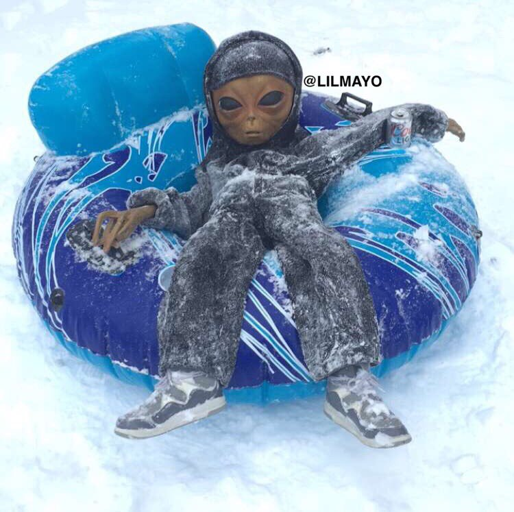
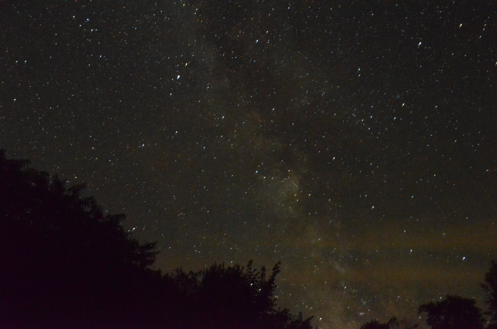
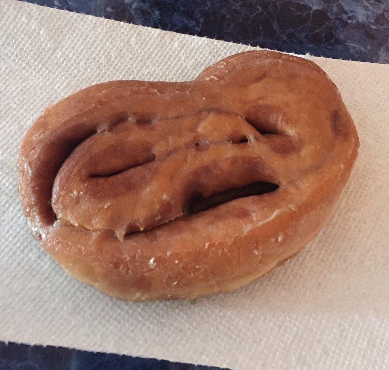

Who are We?
We at the Alien Nation believe in sovereignty. You have the right to speak freely and openly about your encounters and your thoughts
on the matters that keeps you up at night. We have an abundance of information so you will never feel unsatisfied. If you want more
info on how we started or whats going on, head on over .here.

Image source: Twitter: @lilmayo
Alien Enjoying The Fresh Snow
On December 22, 2016 an alien was spotted in Burlington VT. It seems that aliens are not that much different than humans after all
Shown in the picture to the right, we see an alien enjoying some quality time in the new snow. One can find such aliens out and
about in the wintertime...
Read More

Image source: Kevin Gottfried
Are we alone?
Look beyond the clouds to the planets up above. Do you really think that you are alone in this universe?
The fact that you exist shows that life is plausible. That consciousness does exist and that procreation is possible. In the infinite
possibilities of an infinite universe, why is it so hard to conceive that there...
Read More

Image source: cheftlp1221 / Via imgur.com
Potential E.T. found on Earth
If this is not proof enough that something exists, I am not sure what we
will need. Besides actually being face to face with an intellectual being, the proof of their existence seems to find us in ways like
this. The fact that we can recognize a face within this donut...
Read More
 Image source: Kevin Gottfried
Image source: Kevin Gottfried
Abduction reported in Beverly Hills
Adrienne reported an Alien encounter on December 21, 2012. She quotes "I was walking my cat at night when I saw a light at the end of the street.
It got closer and closer until I was"...
Read More
Image source: https://inserbia.info/today/2014/04/prophecy-contact-with-aliens-from-vimfam-europe-is-ruled-by-muslims/
Baba Vanga the Blind Prophet
She has the ability to predict things that are going to happen in the future and she even has predicted some things that have
already happened. Baba is important to the Alien Nation becaue she predicts many interactions with the extra-terrestrial kind.
In the beginning of 1993 Vanga said that USSR will be renewed in the first quarter of the 21st century. And before her death,
she said her last prophecy: “A time of wonders and discoveries in the field of the intangible is coming. We will witness of the
great archaeological discoveries that will dramatically change...
Read More